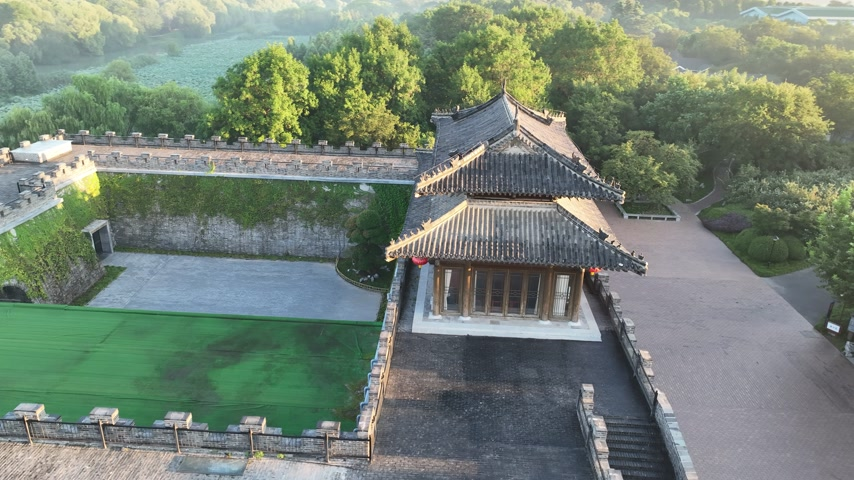
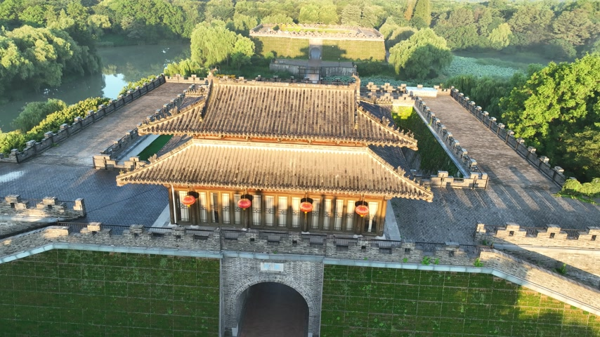
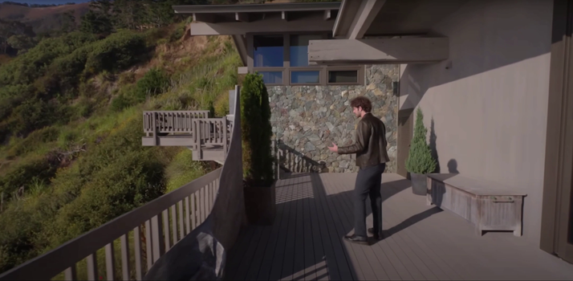
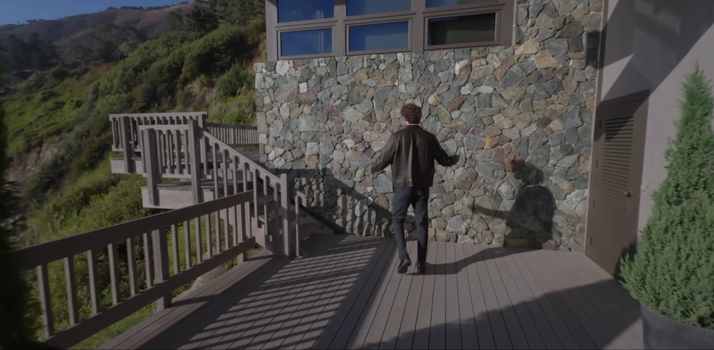
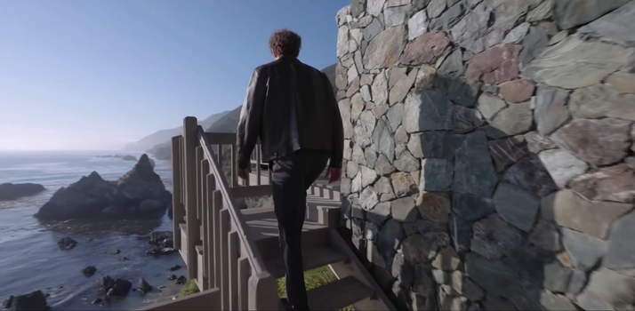
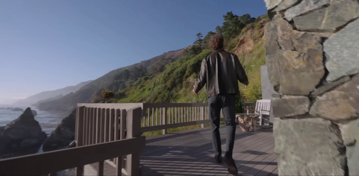

Introduction
Exploring a generated world should not mean losing it when you look away. Video world models create new observations as users move the camera, but maintaining a coherent world requires remembering scenes beyond the recent context and recovering their appearance and structure when revisited.
WorldCrafter addresses this challenge with a camera-queryable, implicit 3D-aware memory. Its key idea is to let the requested viewpoint guide which historical information reaches the video generator. A jointly trained memory encoder and pose-conditioned readout turn complementary past views into a fixed set of target-view-specific memory tokens, without explicit depth estimation or geometric warping. This memory preserves historical scene information, while recent temporal context supports ongoing motion.
Starting from a single image or a text prompt, WorldCrafter supports camera-controlled, minute-scale exploration across static and dynamic scenes. Few-step distillation enables real-time streaming interaction. On a benchmark spanning 145 scenes and 725 camera trajectories, WorldCrafter improves long-horizon revisit consistency and camera-control accuracy over the evaluated baselines, while achieving the highest overall VBench score.
Consistency Validation
We reconstruct point clouds and camera trajectories from WorldCrafter-generated videos that explore a scene and revisit previously observed viewpoints. Coherent scene geometry and aligned camera poses across revisits provide visual evidence of spatial consistency in the generated videos. The paired visualizations show these reconstructions alongside the generated views.
Image to Explorable World
Turn a single image into an explorable world. WorldCrafter generates a continuous video in response to camera controls, revealing unseen regions, following moving subjects, and returning to familiar views.
Its implicit 3D-aware memory helps recover previously observed scene content, while recent temporal context supports ongoing motion. The examples below demonstrate exploration across static and dynamic environments, including subject continuity when an object leaves the field of view and later reappears.
Text to Explorable World
A text description guides the content of the generated scene, while a camera trajectory controls how it is explored. WorldCore conditions successive video chunks on the text, recent observations, and a compact 3D-aware memory.
As generation continues, the memory is updated from past frames to help retain previously seen content. Text guides what the world looks like; camera control and memory support coherent exploration over time.
Novel View Synthesis
Explore new viewpoints from one or more input images with WorldCrafter-fast. Select an example below. The courtyard includes a slider for comparing input-view settings, while the walking-person example uses four reference images.






Interactive Demo
A recorded demonstration of real-time interaction with WorldCrafter, showing how user controls guide exploration of a generated world. This is a screen recording, not a playable demo.
Citation
Citation details will be added here.